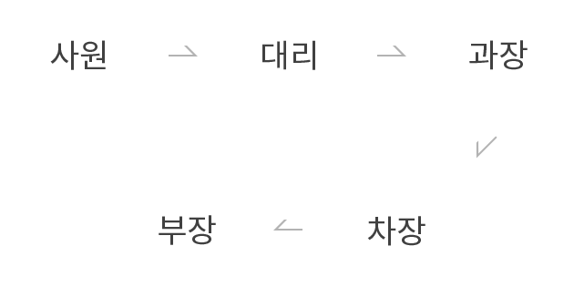
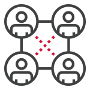

인사제도
삼화는 공정한 인사시스템을 통해
직원들의 능력향상을 도모합니다.
삼화페인트는 직원들의 적성과
업적에 의한
공정한 인사시스템
을
통해 직원들의 능력향상과 세계적인
기업으로의 발전을 위해 다양한
복리후생 제도를 운영하고 있습니다.
인사제도
직급단계
대리>과장>차장>부장">
승진년한
직급별 4~5년
승진방법
종합승진 평가에 의한 승진

능력과 적성을 고려한
적재적소 배치
능력과 업적에 의한
공정한 인사시행
능력과 희망을 반영하는
정기적인 보직순환
복리후생
식대
현물 지급
동호회 활동
종류 : 축구,족구,탁구,볼링,등산,낚시 등
활동방법 : 본사 및 공장별로 동호인을
조직하여 활동
주택자금 지원
구입 : 3,000만원 융자
전세 : 2,000만원 융자
자녀학자금 지원
중/고등학교(전액)
전문대/대학교(학기당 500만원 한도)
장기근속자 국내외 여행(부부동반)
기타복리후생
기숙사 지원, 경조금 지원, 휴가비 지원,
직장인 단체보험 가입